Running AT Commands Remotely
Application Note
80000NT10029a Rev.4 – 2011-02-10


Running AT commands remotely Application Note
80000NT10029a Rev.4 – 2011-02-10
APPLICABILITY TABLE
PRODUCT
GT863-PY
GT864-QUAD
GT864-PY
GM862-GPS
GC864-QUAD
GC864-QUAD V2
GC864-PY w/ SIM holder
GC864-DUAL
GC864-DUAL V2
GE863-GPS
GE863-SIM
GE863-PRO3
GE864-QUAD
GE864-QUAD V2
GE864-DUAL V2
GE864-QUAD AUTOMOTIVE V2
GE864-QUAD ATEX
GE865-QUAD
GL865-DUAL
SW Version
7.03.02 / 7.02.07
10.0x.xx4
Reproduction forbidden without Telit Communications S.p.A. written authorization - All Rights Reserved
Page 2 of 37


Running AT commands remotely Application Note
80000NT10029a Rev.4 – 2011-02-10
Contents
1. INTRODUCTION ....................................................................................................................... 5
1.1.
CONTACT INFORMATION, SUPPORT ..................................................................................................... 5
1.2.
TEXT CONVENTIONS .......................................................................................................................... 6
1.3.
RELATED DOCUMENTS ...................................................................................................................... 6
1.4.
DOCUMENT HISTORY ......................................................................................................................... 6
2. SMSATRUN .............................................................................................................................. 7
2.1.
REQUIREMENTS ................................................................................................................................ 7
2.2.
ALERTS ............................................................................................................................................ 8
2.3.
DESCRIPTION .................................................................................................................................... 9
2.4.
EXAMPLE SMS ATRUN .................................................................................................................. 14
2.5.
DELAYS AND NOTES ................................................................................................................... 16
2.5.1.
Delays ................................................................................................................................... 16
2.5.2.
Notes .................................................................................................................................... 17
3. TCPATRUN ............................................................................................................................ 19
3.1.
CONFIGURATION ............................................................................................................................. 20
3.2.
TCPATRUN IN SERVER MODE ......................................................................................................... 21
3.2.1.
Description ........................................................................................................................... 21
3.2.2.
Authentication mode ........................................................................................................... 24
3.3.
TCPATRUN IN CLIENT MODE .......................................................................................................... 25
3.3.1.
Description ........................................................................................................................... 25
3.4.
AT COMMANDS IN SEQUENCE ........................................................................................................... 27
3.5.
TRANSPARENCE .............................................................................................................................. 28
3.6.
ALERTS .......................................................................................................................................... 28
3.7.
EXAMPLES ...................................................................................................................................... 30
3.7.1.
TCP ATRUN in server mode and AT commands ................................................................. 30
3.7.2.
TCPATCMDSEQ feature ....................................................................................................... 31
3.8.
DELAYS AND NOTES ................................................................................................................... 32
3.8.1.
Delays ................................................................................................................................... 32
3.8.2.
Notes .................................................................................................................................... 32
3.9.
TCPATRUN AND PYTHON ............................................................................................................... 33
Reproduction forbidden without Telit Communications S.p.A. written authorization - All Rights Reserved
Page 3 of 37


Running AT commands remotely Application Note
80000NT10029a Rev.4 – 2011-02-10
DISCLAIMER
The information contained in this document is the proprietary information of Telit
Communications S.p.A. and its affiliates (“TELIT”). The contents are confidential and
any disclosure to persons other than the officers, employees, agents or subcontractors
of the owner or licensee of this document, without the prior written consent of Telit, is
strictly prohibited.
Telit makes every effort to ensure the quality of the information it makes available.
Notwithstanding the foregoing, Telit does not make any warranty as to the information
contained herein, and does not accept any liability for any injury, loss or damage of any
kind incurred by use of or reliance upon the information.
Telit disclaims any and all responsibility for the application of the devices characterized
in this document, and notes that the application of the device must comply with the
safety standards of the applicable country, and where applicable, with the relevant
wiring rules.
Telit reserves the right to make modifications, additions and deletions to this document
due to typographical errors, inaccurate information, or improvements to programs
and/or equipment at any time and without notice. Such changes will, nevertheless be
incorporated into new editions of this application note.
Copyright: Transmittal, reproduction, dissemination and/or editing of this document as
well as utilization of its contents and communication thereof to others without express
authorization are prohibited. Offenders will be held liable for payment of damages. All
rights are reserved.
Copyright © Telit Communications SpA 2011.
Reproduction forbidden without Telit Communications S.p.A. written authorization - All Rights Reserved
Page 4 of 37


Running AT commands remotely Application Note
80000NT10029a Rev.4 – 2011-02-10
1.
Introduction
The information presented in this document is believed to be accurate and reliable.
However, no responsibility is assumed by Telit Communications S.p.A. for its use, nor
any infringement of patents or other rights of third parties which may result from its
use. No license is granted by implication or otherwise under any patent rights of Telit
Communications S.p.A. other than for circuitry embodied in Telit products. This
document is subject to change without notice.
1.1.
Contact Information, Support
For general contact, technical support, to report documentation errors and to order
manuals, contact Telit Technical Support Center (TTSC) at:
TS-EMEA@telit.com
TS-NORTHAMERICA@telit.com
TS-LATINAMERICA@telit.com
TS-APAC@telit.com
Alternatively, use:
http://www.telit.com/en/products/technical-support-center/contact.php
For detailed information about where you can buy the Telit modules or for
recommendations on accessories and components visit:
http://www.telit.com
To register for product news and announcements or for product questions contact Telit
Technical Support Center (TTSC).
Our aim is to make this guide as helpful as possible. Keep us informed of your
comments and suggestions for improvements.
Telit appreciates feedback from the users of our information.
Reproduction forbidden without Telit Communications S.p.A. written authorization - All Rights Reserved
Page 5 of 37


Running AT commands remotely Application Note
80000NT10029a Rev.4 – 2011-02-10
1.2.
Text Conventions
Danger – This information MUST be followed or catastrophic equipment failure or
bodily injury may occur.
Caution or Warning – Alerts the user to important points about integrating the
module, if these points are not followed, the module and end user equipment may
fail or malfunction.
Tip or Information – Provides advice and suggestions that may be useful when
integrating the module.
All dates are in ISO 8601 format, i.e. YYYY-MM-DD.
1.3.
Related Documents
AT Commands Reference guide, 80000ST10025a
1.4.
Document History
Revision
Date
Changes
s
ISSUE #0
2009-08-28 Release First ISSUE# 0
ISSUE #1
2010-05-07 Added commands in paragraph 3.9.2 (Notes)
Correction of delays table regarding AT+CFUN command in
paragraph 3.9.1
Correction in the pictures in paragraph 2.3
“Alerts” moved from paragraph 3.3.1 to paragraph 3.6 and
integrated with a note about Idle Activity Timeout
ISSUE #2
2010-05-18 Deletion of note 15 in par. 3.9.2 Notes
Shifted paragraph 3.9 in par. 2.5, renamed Delays and Notes.
Added par. 3.9 regarding Python use. Changed the images in par
2.3 and in par. 3.1 (before 3.1).
Added notes about ATZ command and about Packet Size
ISSUE#3
2010-10-04 Added GL865-DUAL to the applicability table
ISSUE#4
2010-02-10 Added note regarding SMS ATRUN Activation in 2.5.2
Added note regarding the Idle Activity Timeout and the
Transparence in 3.6
Edited table in par 3.8.1
Reproduction forbidden without Telit Communications S.p.A. written authorization - All Rights Reserved
Page 6 of 37


Running AT commands remotely Application Note
80000NT10029a Rev.4 – 2011-02-10
2.
SMSATRUN
2.1.
Requirements
Two kinds of SMS are valid for the SMS ATRUN service:
1. Simple ATRUN SMS:
a) the SMS originating address shall match with a number defined in a white list
in the module
b) the text has to begin with the string “AT” or “HAT”
c) the SMS coding alphabet has to be default GSM 7 bit or 8 bit
2. Digest ATRUN SMS:
a) The SMS User Data has to contain an header comprising a MD5 digest calculated
on the useful text with a password belonging to a white list in the module
b) the text has to begin with the string “AT” or “HAT”
c) the SMS coding alphabet has to be 8 bit
In the Digest SMS case the SMS User Data has the following format:
Offset
Size
Value
Description
0
3
0xD0D0D0
RUNAT SMS Code
3
1
0
Transaction Id
4
1
0x11
Segment 1 of 1
5
1
Session Id
6
24
Digest:
B64(MD5(B64(MD5(Pwd)):B64(MD5(Useful Text))))
30
Useful
Text
Table 1 Digest ATRUN SMS User Data Format
The format is the same of OTA service SMS protocol: obviously the first 3 bytes code
value is different
If the text begins with the “AT” string, then the AT command response has to be
sent to the sender by one or more response SMS. If the text begins with the
“HAT” string, then the AT command response hasn’t to be sent to the sender
After the “AT” (or “HAT”) string there are the commands. For example:
AT+CGMR;+CGSN or HAT+CGMR;+CGSN
Reproduction forbidden without Telit Communications S.p.A. written authorization - All Rights Reserved
Page 7 of 37


Running AT commands remotely Application Note
80000NT10029a Rev.4 – 2011-02-10
The response SMS from the module to the sender are coded with the same
alphabet and is of the same kind of the received SMS (Simple SMS or Digest
SMS)
The received SMS hasn’t to be concatenated, but the response SMS can be
concatenated. In the case of Digest SMS, the MD5 digest is calculated on the
portion of text contained in the same SMS; the User Data has the following
format:
Offset
Size
Value
Description
0
3
0xD1D1D1
Response RUNAT SMS Code
3
1
0
Transaction Id
4
1
0x11
Segment 1 of 1
5
1
Session Id
6
24
Digest:
B64(MD5(B64(MD5(Pwd)):B64(MD5(Useful Text))))
30
Useful
Text
Table 2 Response Digest ATRUN SMS User Data Format
When the SMS RUN AT service is enabled setting to 1 the parameter <mod> of
the AT command #SMSATRUN, then the AT instance specified by the parameter
<muxInstance> of the AT command #SMSATRUNCFG is reserved to run the AT
commands inserted in the received validated SMS
If the SMS RUN AT service is disabled setting to 0 the parameter <mod> of the
AT command #SMSATRUN, then the used AT instance is returned to the
previous user, if there is
The <mod> of the AT command #SMSATRUN and <muxInstance> parameter of
the AT command #SMSATRUNCFG are stored in the NVM. At boot, if the <mod>
parameter is set to 1, then the AT instance specified in the <muxInstance> is
automatically reserved to run the AT commands inserted in the received
validated SMS
2.2.
Alerts
If the <mod> parameter of the AT command #SMSATRUN is set to 1, then all
received SMS are subjected to a test to validate them as ATRUN SMS
If a SMS is recognized as ATRUN SMS, it is handled and silently discarded
Reproduction forbidden without Telit Communications S.p.A. written authorization - All Rights Reserved
Page 8 of 37


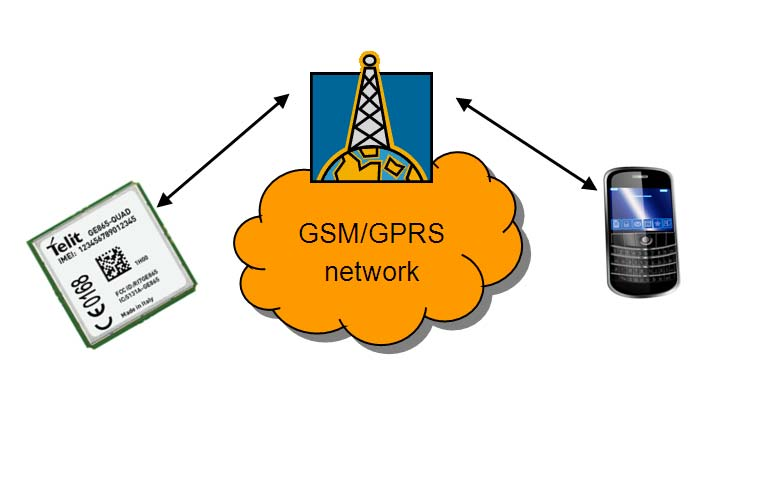
Running AT commands remotely Application Note
80000NT10029a Rev.4 – 2011-02-10
When an AT instance is reserved for the SMS ATRUN service, then every other
request to use it, coming from other services, is refused: only the OTA service
can subtract the AT instance reserved to SMS ATRUN service.
if the service is activated on the first instance (<muxInstance> = 1 in
AT#SMSATRUNCFG), the control of that instance will be loosed and there will
be the need of the multiplexer to deactivate the service by the second or third
instance.
2.3.
Description
This service allows an user to run an AT Command via SMS. The user can send an SMS
requesting the module to know the selected network operator or to set a GPIO
The scenario is the following:
Reproduction forbidden without Telit Communications S.p.A. written authorization - All Rights Reserved
Page 9 of 37


Running AT commands remotely Application Note
80000NT10029a Rev.4 – 2011-02-10
Module on the field
Mobile
SMS ATRUN Idle
Local: AT#SMSATRUNCFG=3,1,2
Local: AT#SMSATRUN=1
Local: AT#SMSATWL=0,1,0,”+39346XYWZ”
SMS ATRUN Active
SMS: AT+ COPS?
SMS: <CR><LF>+COPS: 0,0,"vodafone IT"
<CR><LF>"<CR><LF>OK<CR><LF>
First of all, the SMS ATRUN service is locally configured and enabled in the module on
the field by the command #SMSATRUNCFG and :
AT#SMSATRUNCFG=3,1,2
// the service is configured to run on the third instance, the unsolicited is enabled and
// the timeout for the response to the AT commands is set to 2 minutes
AT#SMSATRUN=1
// the service is enabled
and the mobile number is added in the white list by the command #SMSATWL:
AT#SMSATWL=0,1,0,”+39346XYWZ” //the number +39346XYWZ is added in the
// first position of the white list
At this point the SMS ATRUN service is enabled and AT commands can be issued to the
module on the field via SMS from another device containing the SIM with the number
added in the white list.
Reproduction forbidden without Telit Communications S.p.A. written authorization - All Rights Reserved
Page 10 of 37


Running AT commands remotely Application Note
80000NT10029a Rev.4 – 2011-02-10
For example another mobile can set the GPIO of the module on the field issuing the
command AT#GPIO=2,1 using the following standard AT command
AT+CMGS=346XYWZ
> AT#GPIO=2,1
The module on the field let run the AT+COPS? on the third instance and will send back
to the mobile an SMS with the response. The mobile reads the arrived SMS:
+CMTI: "SM",1
AT+CMGR=1
+CMGR: "REC UNREAD","+39346XYWZ","","08/05/28,11:04:37+08"
+COPS: 0,0,"vodafone IT"
OK
If the mobile doesn’t want to receive back the response, it can issue the following
command:
AT+CMGS=346XYWZ
> HAT+COPS?
If the mobile wants to communicate to the module on the field using the Digest ATRUN
SMS, a common password has to be inserted locally in the white list of the module on
the field by the command AT#SMSATWL:
AT#SMSATWL=0,2,1,"1234567890123456"
//the password has to be 16
// characters length and is
// inserted, in this example, in
// position 2 of the white list
A maximum number of 2 passwords can be inserted in the white list.
Now the mobile can also change the SIM because the sender number isn’t checked
from module on the field in the case of Digest ATRUN SMS.
So the mobile can interrogate the module on the field, to know the selected network
operator, issuing the command AT+COPS? using the following standard AT command
AT+CMGS=53
>079193432900200011000C919343868676110015AD26D0D0D000110157696A437032715633734E7
62B61727532305A5561773D3D41542B434F50533F
Where the User Data portion Is formatted according to Table 1 as follows:
Reproduction forbidden without Telit Communications S.p.A. written authorization - All Rights Reserved
Page 11 of 37


Running AT commands remotely Application Note
80000NT10029a Rev.4 – 2011-02-10
Offset Size Value
Description
0
3
D0D0D0
RUNAT SMS Code
3
1
00
Transaction Id
4
1
11
Segment 1 of 1
5
1
01
Session Id
6
24
57696A437032715633734E762B61727532305A
Digest:
5561773D3D
B64(MD5(B64(MD5(Pwd)):B64(
MD5(AT+COPS?))))
30 41542B434F50533F
AT+COPS?
The module on the field let run the AT+COPS? on the third instance and will send back
to the mobile an SMS with the response. The mobile reads the arrived SMS:
+CMTI: "SM",1
AT+CMGR=1
+CMGR: 0,"",83
0791934329002000040C9193438686761100158050922102818040D1D1D10011014A756E726137723
06B494563483971563534326E33513D3D0D0A2B434F50533A20302C302C22766F6461666F6E6520
4954220D0A0D0A4F4B0D0A
Where the User Data portion Is formatted according to Table 2 as follows:
Offset Size
Value
Description
0
3
D1D1D1
Response RUNAT SMS Code
3
1
00
Transaction Id
4
1
11
Segment 1 of 1
5
1
01
Session Id
6
24
4A756E72613772306B494563483
Digest:
971563534326E33513D3D
B64(MD5(B64(MD5(Pwd)):B64(MD5(<CR><
LF>+COPS: 0,0,"vodafone
IT"<CR><LF>"<CR><LF>OK<CR><LF
>))))
30 0D0A2B434F50533A20302C302C
<CR><LF>+COPS: 0,0,"vodafone
22766F6461666F6E65204954220
IT"<CR><LF>"<CR><LF>OK<CR><LF
D0A0D0A4F4B0D0A
>
Reproduction forbidden without Telit Communications S.p.A. written authorization - All Rights Reserved
Page 12 of 37


Running AT commands remotely Application Note
80000NT10029a Rev.4 – 2011-02-10
ALERTS:
Some AT commands can fail if set through SMS ATRUN service, due to an interaction of
the AT command execution with the SMS service. These problems can be avoided
inserting a delay before AT command execution (e.g. AT+COPS=? using SMS ATRUN).
This delay is set through the command AT#ATRUNDELAY:
AT#ATRUNDELAY=1,5 sets for SMS ATRUN commands a delay of 5 seconds
Once set, the delay is valid till a new AT#ATRUNDELAY is issued.
Some other commands can block the AT command sending-AT command response
receiving mechanism if set through ATRUN service, see below.
Reproduction forbidden without Telit Communications S.p.A. written authorization - All Rights Reserved
Page 13 of 37


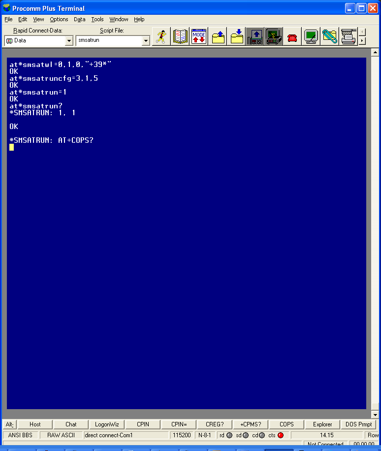
Running AT commands remotely Application Note
80000NT10029a Rev.4 – 2011-02-10
2.4.
Example SMS ATRUN
Figure 1: Module in the field
Reproduction forbidden without Telit Communications S.p.A. written authorization - All Rights Reserved
Page 14 of 37


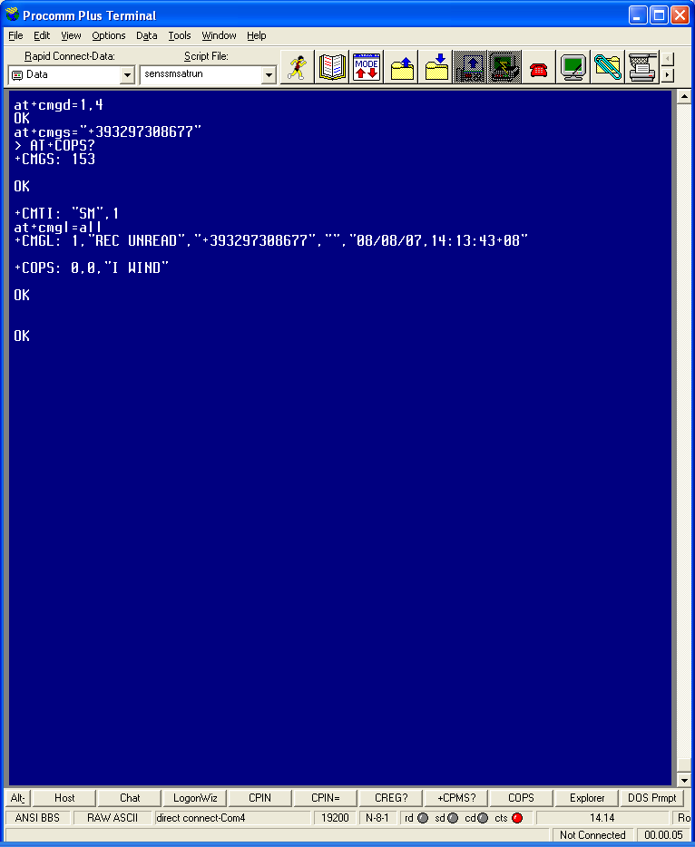
Running AT commands remotely Application Note
80000NT10029a Rev.4 – 2011-02-10
Figure 2: Mobile
Reproduction forbidden without Telit Communications S.p.A. written authorization - All Rights Reserved
Page 15 of 37


Running AT commands remotely Application Note
80000NT10029a Rev.4 – 2011-02-10
In Figure 1: Module in the field it’s shown the local configuration:
All the numbers starting with +39 are added in the white list by the command
#SMSATWL
the service is configured with the command #SMSATRUNCFG to run on the third
instance, the unsolicited is enabled and the timeout for the response to the AT
commands is set to 2 minutes
the service is enabled with the command #SMSATRUN
In Figure 2: Mobile the mobile sends to the module in the field an SMS with the text
containing the string AT+COPS?.
At the SMS reception, the module on the field runs automatically the command
AT+COPS?, puts on the instance the URC #SMSATRUN: AT+COPS? (as shown in Figure
1: Module in the field) and sends back the response SMS.
As shown in Figure 2: Mobile, the SMS received from the mobile contains the response
to the command AT+COPS? that the module on the field has executed.
2.5.
DELAYS AND NOTES
2.5.1.
Delays
The following table shows the suggested delays (in seconds) for SMS ATRUN service.
These delays are set using AT#ATRUNDELAY command.
AT+COPS=?
10
AT+CGCLASS
AT+CFUN
AT#GPRS
AT#SIMDET
AT#CSURV AT#CSURVC
AT#CSURVU
AT#CSURVUC
AT#CSURVB
AT#CSURVBC
AT#CSURVP
AT#CSURVPC
AT#SGACT
5
AT+CGACT
AT+CGATT
Reproduction forbidden without Telit Communications S.p.A. written authorization - All Rights Reserved
Page 16 of 37


Running AT commands remotely Application Note
80000NT10029a Rev.4 – 2011-02-10
2.5.2.
Notes
1) To send AT\x and AT^xxx commands it is necessary to set the outgoing SMS’s Data
Coding Scheme (DCS) so that they are 8 bits coded, because characters ‘\ ‘and ‘^’ are
not included in the standard GSM 7 bit alphabet. AT#SMSMODE must be set to 1, and
the SMS text must be in hexadecimal format; the answer SMS received to the sent
command is also 8 bit coded (hexadecimal format);
2) AT#REBOOT and AT#SHDN commands do not send back the answer SMS before
powering down the “module in the field”; AT+CFUN=4, AT+CGCLASS="CG” and
AT+COPS=2 commands do not send back the answer SMS before deregistering the
module;
3) AT#SIMDET=0, AT+CGDATA=”PPP”,1, AT#FTPPUT, AT$GPSNMUN=3, ATQ1 and
ATQ2 commands cause a block of the SMS exchange mechanism, until the “module in
the field” reboots after timeout set with AT#SMSATRUNCFG command expires;
4) AT+CMUX=0, AT#BND=3, AT+CFUN=2 and AT+CFUN=4 commands cause an
irreversible block of the SMS exchange mechanism;
5) AT+CGCLASS=”CG” and AT+CGSMS=0 commands cause an irreversible block of the
SMS exchange mechanism, until a new AT+CGCLASS or AT+CGSMS command is sent
with TCP ATRUN; AT+CFUN=4 and AT+COPS=2 commands cause an irreversible block
of the SMS exchange mechanism, until a new AT+CFUN or AT+COPS command is sent
with TCP ATRUN;
6) enabling of FDN phonebook in the “module in the field” causes an irreversible block
of the SMS exchange mechanism if the “mobile” phone number is not in the FDN list;
FDN must then be disabled using TCP ATRUN;
7) if ATD command is sent to the “module in the field” to start a data call the response
SMS, containing the CONNECT or NO CARRIER result, is received only after the call has
been disconnected by the called party;
8)AT+CMGS, AT+CMGW, AT#SEMAIL, AT#SSEND, AT#WSCRIPT and all commands that
require to insert data after a prompt is received cannot be executed via SMS ATRUN,
because the prompt is not sent back in an SMS response;
9) The commands of AT#CSURV family will have their response truncated if too long
(response text longer than the text that can fit into a concatenated SMS made up of the
maximum number of SMS that can be concatenated, i.e. 15);
Reproduction forbidden without Telit Communications S.p.A. written authorization - All Rights Reserved
Page 17 of 37


Running AT commands remotely Application Note
80000NT10029a Rev.4 – 2011-02-10
10) The command ATZ returns ERROR if a Data Call is up;
11) By default the SMS ATRUN service is disabled. It can be activated either by the
command AT#SMSATRUN or receiving a special SMS that can be sent from a Telit
server. After the reception of this SMS, the module activates the service and inserts a
default password in the white list. An optional phone number can be specified in the
SMS body that will be inserted in the white list. For further information please refer to
Telit contacts indicated in 1.1 above.
Reproduction forbidden without Telit Communications S.p.A. written authorization - All Rights Reserved
Page 18 of 37


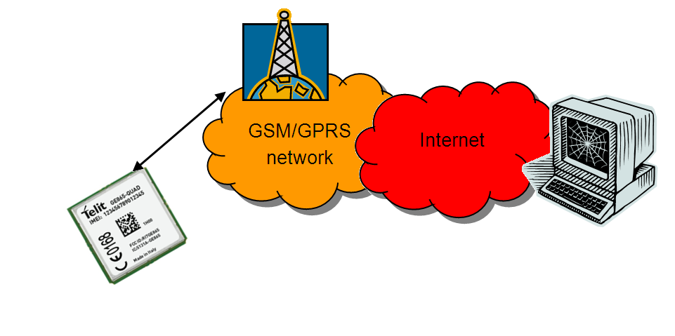
Running AT commands remotely Application Note
80000NT10029a Rev.4 – 2011-02-10
3.
TCPATRUN
AT command execution can also be requested via TCP. The AT interface input and
output will be redirected to the TCP socket.
There are two kinds of TCP ATRUN service, differing the one from the other in the way
the module connects to the remote PC.
In the first kind of TCP ATRUN, the module acts as a server, that is to say it is in TCP
listen state, waiting for an incoming TCP/IP connection from a client.
In the second one, the module acts as a client, that is to say it tries, as soon as the
service is enabled, to connect to a server.
In next paragraphs we describe the AT command sequence to start the TCP ATRUN
service and how the service behaves. Please refer to the AT commands specification for
the exact commands syntax.
Reproduction forbidden without Telit Communications S.p.A. written authorization - All Rights Reserved
Page 19 of 37


Running AT commands remotely Application Note
80000NT10029a Rev.4 – 2011-02-10
3.1.
Configuration
To start TCPATRUN service, either in server mode or in client mode, it is necessary that
a PDP context is opened, through the command AT#SGACT:
AT#SGACT=1,1
for example, here we open the PDP context with id 1
The answer, in case of success, will be the IP address of the module:
#SGACT: “212.141.113.92”
It is recommended to use the command “AT#SGACTCFG” to set the context “auto-
activation”: in this way the context will be automatically activated in case of switching
off/on, in case of deactivation from Network and in case of SIM removal.
AT#SGACTCFG=1,1
the auto-activation is set on context 1
It is suggested to configure the socket parameters through the command AT#SCFG
(please read the paragraph “Alerts”), using the socket identifier (the first parameter).
For example:
AT#SCFG=1,1,300,0,600,1
Now, some configuration parameters have to be set for both type of service, through
the command AT#TCPATRUNCFG:
AT#TCPATRUNCFG =1,2,1024,12345,`"212.141.125.127`",1,5,1,5,2
The first parameter is the identifier of the socket that will be used, the second one is
the instance (in the module the AT interface can use three instances) that will be
dedicated to the TCP ATRUN, the third one is the TCP port for listen (used in server
mode), the fourth one and the fifth one are respectively the TCP port and IP address of
the host (for the client mode), the sixth one is for enabling the unsolicited that advises
of the connection/disconnection from server, the seventh one is the timeout for an AT
command execution, the eighth one is for choosing the authentication mode (in server
mode), the ninth one is the number of attempts to connect that the module will do in
case of automatic re-start of the service (in client mode), the last one is the delay (in
minutes) from one attempt and the other (in client mode).
Reproduction forbidden without Telit Communications S.p.A. written authorization - All Rights Reserved
Page 20 of 37


Running AT commands remotely Application Note
80000NT10029a Rev.4 – 2011-02-10
3.2.
TCPATRUN in server mode
3.2.1.
Description
The TCP ATRUN service in server mode is enabled locally by the AT command
AT#TCPATRUNL.
This command puts the module in listen state on a determined port, so that a client can
connect from remote opening a TCP socket to the IP address and port of the module.
Once connected, the client can issue AT commands to the module.
Note that the TCP ATRUN service in server mode is useful with static IP address.
The TCP access to the module is controlled by a firewall.
In the case of TCP ATRUN service, this firewall can be set (and saved in memory) by the
following command
AT#TCPATRUNFRWL=1,”212.141.112.216”,”255.255.255.255”
The two strings represent the IP address and mask
The service is also protected by the authentication parameters: Username and
Password.
These parameters are set (and saved in memory) through the following command
AT#TCPATRUNAUTH=1,”testuser”,”testpassw”
The user can choose between two kinds of authentication procedure, as we will see in
the next paragraph.
Finally, the TCP ATRUN service can be enabled using “AT#TCPATRUNL”:
AT#TCPATRUNL =1
Now, referring to the parameters configuration that has been set in this example
through the command AT#TCPATRUNCFG:
the socket 1 is in listen state on port 1024, and the IP address is the one given by the
AT#SGACT command.
The client can connect to the module if its address is included in the firewall.
It can use Telnet or a dedicated program to open the socket and communicate with the
module. Once connected, username and password have to be transmitted in a way that
depends on the authentication mode set with AT#TCPATRUNCFG.
Reproduction forbidden without Telit Communications S.p.A. written authorization - All Rights Reserved
Page 21 of 37


Running AT commands remotely Application Note
80000NT10029a Rev.4 – 2011-02-10
After authentication, an AT command can be issued and the module will parse the
command and send the response.
For example, client can interrogate the module about all the cells in the neighbour of
the serving cell, by the commands AT#MONI=7 and AT#MONI.
If the TCP ATRUN service is not disabled, it automatically starts at every start-up of the
module as long as the PDP context auto-activation has been set by AT#SGACTCFG.
The same happens in case of a deactivation from Network and in case of SIM removal.
Reproduction forbidden without Telit Communications S.p.A. written authorization - All Rights Reserved
Page 22 of 37


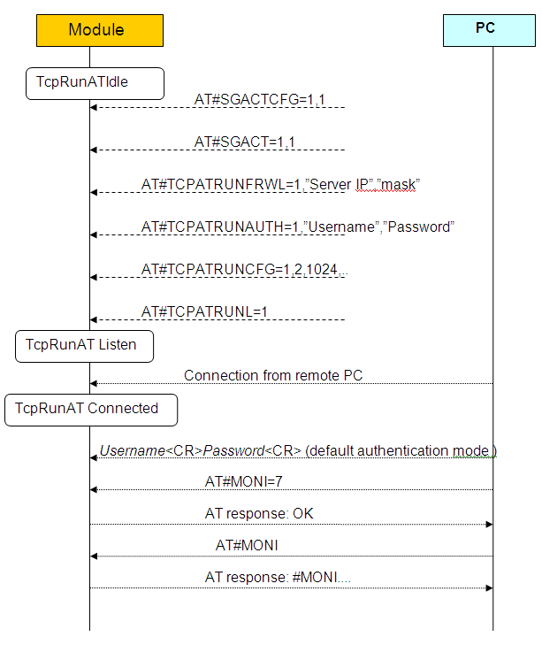
Running AT commands remotely Application Note
80000NT10029a Rev.4 – 2011-02-10
Reproduction forbidden without Telit Communications S.p.A. written authorization - All Rights Reserved
Page 23 of 37


Running AT commands remotely Application Note
80000NT10029a Rev.4 – 2011-02-10
3.2.2.
Authentication mode
Setting the authentication mode parameter in the command AT#TCPATRUNCFG, the
user can choose between two kinds of authentication: “automatic” and “step-by-step”.
The first one is useful for easily automate the procedure, the second one is more
graphically pleasant.
3.2.2.1.
Automatic mode (default)
Once the connection between server and module is opened and before issuing any AT
command, username and password have to be transmitted in the following way:
userid<CR>passw<CR> (where <CR> means Carriage Return and is equal to 0x0d)
After these strings, AT commands can be sent to the module.
The couple Username – Password has to be included in the authentication parameters
list built through the command AT#TCPATRUNAUTH, otherwise the module will
immediately close the connection.
If a timeout expires in the module without receiving one of the two parameters, then
the module will close the connection.
3.2.2.2.
Step-by-step
Once the connection between server and module is opened, the module first requests
the Username and then, if the Username has been received and accepted (userid<CR>),
requests the Password. Once the Password has been received and accepted
(passw<CR>), the module transmits a “Login successful” message.
Username: userid
Password: passw
Login successful.
From this moment AT commands sent by the server are parsed by the module.
Also in this case, if the couple Username – Password is not included in the
authentication parameters list, or if the timeout expires without receiving a parameter,
the module will close the connection.
Reproduction forbidden without Telit Communications S.p.A. written authorization - All Rights Reserved
Page 24 of 37


Running AT commands remotely Application Note
80000NT10029a Rev.4 – 2011-02-10
3.3.
TCPATRUN in client mode
3.3.1.
Description
This TCP ATRUN service is enabled locally by the AT command AT#TCPATRUND:
AT#TCPATRUND = 1
This command opens a TCP socket to connect to the Host IP address and to the Host
port specified in AT#TCPATRUNCFG.
To allow the module to connect, the server (the remote PC) has to have been put in
listen through a dedicated program at the port specified with AT#TCPATRUNCFG
command (in the previous example 12345).
If the response to AT#TCPATRUND command is “OK”, the module is connected to the
remote PC and ready to receive AT commands.
If the TCP ATRUN service is not disabled, it automatically starts at every start-up of the
module as long as the PDP context auto-activation has been set through
AT#SGACTCFG.
The same happens in case of a deactivation from Network and in case of SIM removal.
This means that the module will automatically try to connect to the Host IP (the one set
through AT#TCPATRUNCFG), and if connection is not successful, it will retry. The
number of attempts and the delay between one and the other will be those set through
AT# TCPATRUNCFG.
Reproduction forbidden without Telit Communications S.p.A. written authorization - All Rights Reserved
Page 25 of 37


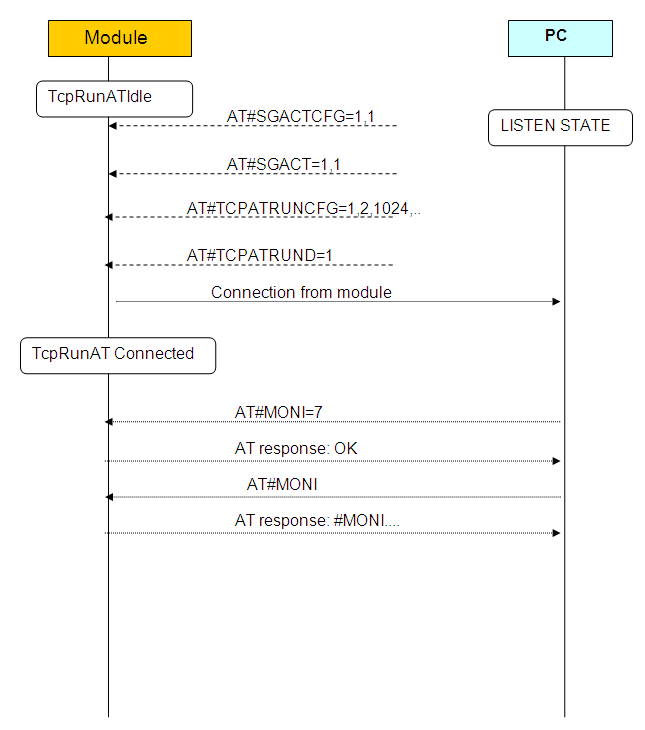
Running AT commands remotely Application Note
80000NT10029a Rev.4 – 2011-02-10
Reproduction forbidden without Telit Communications S.p.A. written authorization - All Rights Reserved
Page 26 of 37


Running AT commands remotely Application Note
80000NT10029a Rev.4 – 2011-02-10
3.4.
AT commands in sequence
The standard usage of AT interface consists in waiting for response to an AT command
before issuing another one. Each command ends with the delimiter character (<CR> is
the default). In alternative, AT commands can be issued separated by “;”, being treated
like a single command. For example, the response to
AT# SGACT=1,1;#SS
could be
#SGACT: 212.141.252.44
#SS: 1,1,212.141.121.05, 1024,212.141.121.148,1332
#SS: 2,0
#SS: 3,0
#SS: 4,0
#SS: 5,0
#SS: 6,0
OK
What happens if the remote application doesn’t wait for an AT command response
before issuing another one?
If AT commands are issued with the delimiter character but without waiting for
response, some commands can be ignored, for example in the sequence
AT#SGACT=1,1
AT#SS
The AT#SS would be ignored.
In the case of AT commands issued through TCP ATRUN service, a new feature has
been introduced that solves this problem.
This feature is enabled through the command
AT#TCPATCMDSEQ=1.
If enabled, the response to the sequence
AT#SGACT=1,1
AT#SS
could be for example
#SGACT: 212.141.252.44
Reproduction forbidden without Telit Communications S.p.A. written authorization - All Rights Reserved
Page 27 of 37


Running AT commands remotely Application Note
80000NT10029a Rev.4 – 2011-02-10
OK
#SS: 1,1,212.141.121.05, 1024,212.141.121.148,1332
#SS: 2,0
#SS: 3,0
#SS: 4,0
#SS: 5,0
#SS: 6,0
OK
The command AT#TCPATCMDSEQ can be set from any instance, but it just affects AT
commands issued through ATRUN service.
3.5.
Transparence
From TCP ATRUN service, it is possible to connect directly to a serial port of the
module, in transparent mode, that is to say that data will be transferred directly
between TCP ATRUN and the serial port specified. So any data in input on the serial
port will be sent to the remote PC via TCP/IP (and vice-versa). This connection is
opened issuing the command AT#TCPATCONSER=<port>,<rate> from the TCP ATRUN
instance.
After this command has been issued, if no error has occurred, then a “CONNECT” will
be returned from module to advise that the TCP ATRUN instance is in online mode and
connected to the port specified.
To exit from online mode and close the connection, the escape sequence (the default is
“+++”) has to be sent on the TCP ATRUN instance, taking into account that the escape
sequence needs to be sent in one single packet. (So the use of Telnet for Windows,
sending every single byte in a TCP packet, is not appropriate in this case).
3.6.
Alerts
For the connection used by the TCP ATRUN service, a particular socket identifier is
used (see the first parameter of AT#TCPATRUNCFG). So all the settings on that socket
can affect the connection: please refer to the module Easy GPRS User Guide for the use
of the AT commands concerning TCP sockets.
In particular, by the command AT#SCFG, the user can read and change the packet size,
the Transmission Timeout and the Idle Activity Timeout.
Reproduction forbidden without Telit Communications S.p.A. written authorization - All Rights Reserved
Page 28 of 37


Running AT commands remotely Application Note
80000NT10029a Rev.4 – 2011-02-10
To summarize briefly the meaning of the Transmission Timeout: if the bytes to be sent
from the module are less than packet size, then they will be sent just at Transmission
Timeout expiry. So in the case of TCP ATRUN service, it is suggested to set the
minimum Transmission Timeout to avoid to wait for responses. It is strongly
recommended to avoid having it set to infinite.
It is also recommended not to set a Packet Size smaller than the default one.
The meaning of the Idle Activity Timeout is this: if there is no data exchange within the
Idle Activity Timeout period, the connection is closed. This is useful in the following
situation: if the TCP/IP socket is closed by the remote PC in an “unilateral” way, that is
to say without signal exchange with the other side of the connection, on the local side
(the module on the field) the connection is still up, but cannot be used anymore.
In this situation, if the Idle Activity Timeout has been set locally on the module, it will
automatically close the connection, otherwise the only way to close it is using the AT
command AT#TCPATRUNCLOSE locally.
In particular, if the remote PC closes the connection in this “unilateral” way during a
“transparent mode” (described in 3.5) there is no way to close locally the TCP ATRUN.
So if the user wants to use the “transparent mode”, it is very important to set the Idle
Activity Timeout.
After the connection local closure, the TCP ATRUN status is still enabled, so the service
re-starts automatically.
If the TCPATRUN service, in server or client mode, is activated on the first instance
(<muxInstance> = 1 in AT#TCPATRUNCFG), the control of that instance will be loosed
and there will be the need of the multiplexer to deactivate the service by the second or
third instance.
Reproduction forbidden without Telit Communications S.p.A. written authorization - All Rights Reserved
Page 29 of 37


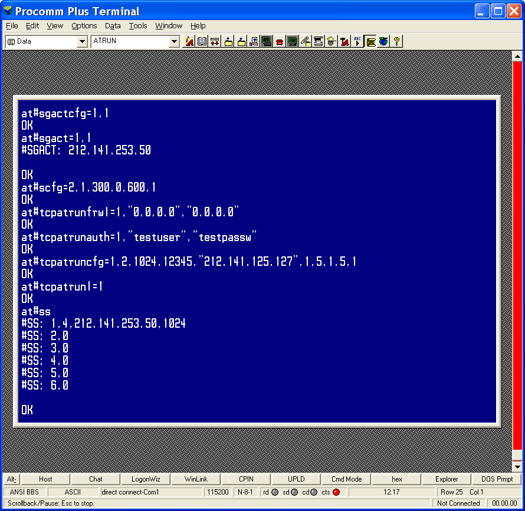
Running AT commands remotely Application Note
80000NT10029a Rev.4 – 2011-02-10
3.7.
Examples
3.7.1.
TCP ATRUN in server mode and AT commands
Remote Mobile
Reproduction forbidden without Telit Communications S.p.A. written authorization - All Rights Reserved
Page 30 of 37


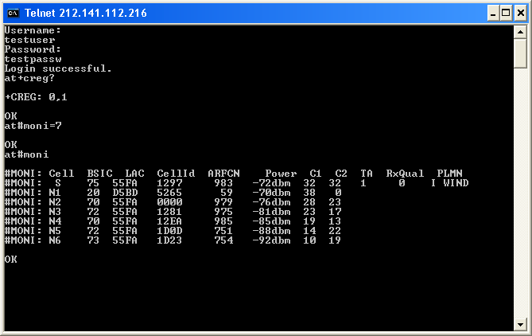
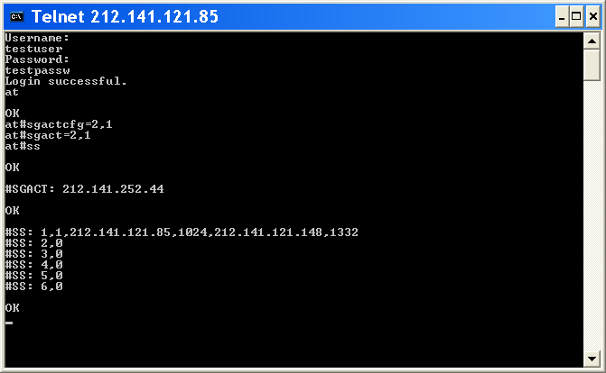
Running AT commands remotely Application Note
80000NT10029a Rev.4 – 2011-02-10
PC ( telnet )
3.7.2.
TCPATCMDSEQ feature
Reproduction forbidden without Telit Communications S.p.A. written authorization - All Rights Reserved
Page 31 of 37


Running AT commands remotely Application Note
80000NT10029a Rev.4 – 2011-02-10
ALERTS:
Some AT commands can fail if set through TCP ATRUN service, due to an interaction of
the AT command execution with the GPRS service. These problems can be avoided
inserting a delay before AT command execution (e.g. AT+COPS=? using SMS ATRUN).
This delay is set through the command AT#ATRUNDELAY:
AT#ATRUNDELAY=0,5
sets for TCP ATRUN commands a delay of 5 seconds
Once set, the delay is valid till a new AT#ATRUNDELAY is issued.
Some other commands can block the AT command sending-AT command response
receiving mechanism if set through ATRUN service, see below.
3.8.
DELAYS AND NOTES
3.8.1.
Delays
The following table shows the suggested delays (in seconds) for TCP ATRUN. These
delays are set using AT#ATRUNDELAY command.
AT+COPS=? 10
3.8.2.
Notes
1) AT#SKTD, AT#SKTL, AT#SKTSAV:
Initial setting for TCPATRUN service(through AT#TCPATRUNCFG) has to be done:
<connId> different from <muxInstance>.
2) AT#QDNS:
a) Initial setting for TCPATRUN service(through AT#TCPATRUNCFG) has to be done:
<muxInstance> = 1.
b) Initial setting by the command AT#SCFG has to be done:
<connId> set for TPCATRUN service(through AT#TCPATRUNCFG) has to be associated
to a <cid> different from 1.
3) AT#GPRS: same as 2b)
Reproduction forbidden without Telit Communications S.p.A. written authorization - All Rights Reserved
Page 32 of 37


Running AT commands remotely Application Note
80000NT10029a Rev.4 – 2011-02-10
4) AT#SKTOP: same as 2) and furthermore:
Initial setting for TCPATRUN service(through AT#TCPATRUNCFG) has to be done:
<connId> different from 1.
5) If initial setting for TCPATRUN service(through AT#TCPATRUNCFG) has done:
<connId> = <muxInstance>,
then parameters set by AT#PKTSZ, AT#SKTTO, AT#DSTO affect the same <connId>
socket on which TCPATRUN service is running.
6) AT+CGATT=0, AT+CGACT=0, AT+CGCLASS=”CC”, AT#SHDN, AT#BND=2, AT#BND=3,
ATQ1, ATQ2, AT#SIMDET=0, AT+CFUN=2 and AT+CFUN=4 commands cause an
irreversible block of the TCP AT RUN mechanism;
7) The commands of AT#CSURV family can have the response truncated if too long:
these commands in fact send their responses during the network search, but while
they are executed, the GPRS service is suspended and so the TCP ATRUN cannot
transmit anything. It stores these responses in a buffer till the network search
completes.
Anyway, the use of this command is deprecated.
8) The command ATZ returns ERROR if a Data Call is up and this Data Call has been set
up on a “muxInstance” different from the TCPATRUN “muxInstance”. The ATZ returns
ERROR also in the case the TCPATRUN works on an IPEGSM context (opened through
AT#SGACT=0,1), because the IPEGSM context is based on a Data Call.
3.9.
TCPATRUN and Python
TCPARUN allows to download/upgrade/execute a Python script into Telit modules
using a remote TCP/IP connection (e.g Telnet). Below is reported a generic example to
demonstrate this feature.
The module has been configured before in TCPATRUN in server mode with the AT
sequence reported below. This sequence can be configured locally (module site) or
using SMSATRUN service.
AT+CGDCONT=1,"IP","myAPN"
AT#SCFG=1,1,1500,0,600,50 // set Inactivity Timeout to 0
Reproduction forbidden without Telit Communications S.p.A. written authorization - All Rights Reserved
Page 33 of 37


Running AT commands remotely Application Note
80000NT10029a Rev.4 – 2011-02-10
AT#TCPATRUNCFG=1,3,1024,… // listening on port 1024
AT#TCPATRUNFRWL=2;#TCPATRUNFRWL=1,"217.0.0.0","255.0.0.0"
AT#TCPATRUNAUTH=1,"MyUser","MyPwd"
AT#SGACT=1,1 // activate the context
AT#TCPATRUNL=1
// start TCPRUNAT service
A remote computer works as an IP client and Telnet is used to connect to the module
on the field.
To start a Telnet session on the remote computer, it is possible to use Hyper Terminal
or any other terminal emulator via TCP/IP, setting the right port (1024 in this case) and
the IP address of the module (returned by AT#SGACT). After the login phase (login
requires username and password), the Python script can be downloaded on the
module, entering on Telnet, AT#WSCRIPT command using the same settings described
in the Telit_Easy_Script_Python user guide.
Below is reported a screen-shot of the procedure described above.
Reproduction forbidden without Telit Communications S.p.A. written authorization - All Rights Reserved
Page 34 of 37


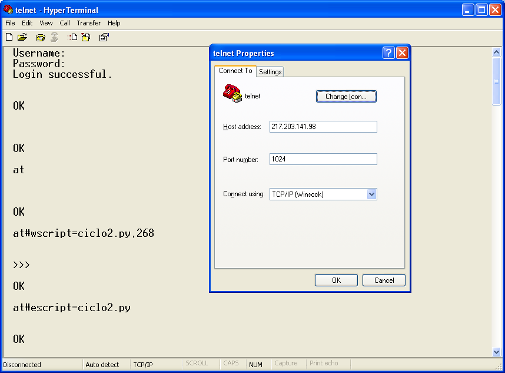
Running AT commands remotely Application Note
80000NT10029a Rev.4 – 2011-02-10
To upgrade a Python script that is running using TCPATRUN service we recommend
this procedure that can be easily execute using remote Telnet:
1) download a new PY script with the same procedure above
2) enable the new PY script with AT#ESCRIPT=ciclo3.py”
3) reboot the module with AT#REBOOT to start the execution of the new python script
(ciclo3.py)
Below is reported a series of screen-shots of the steps described above.
Reproduction forbidden without Telit Communications S.p.A. written authorization - All Rights Reserved
Page 35 of 37


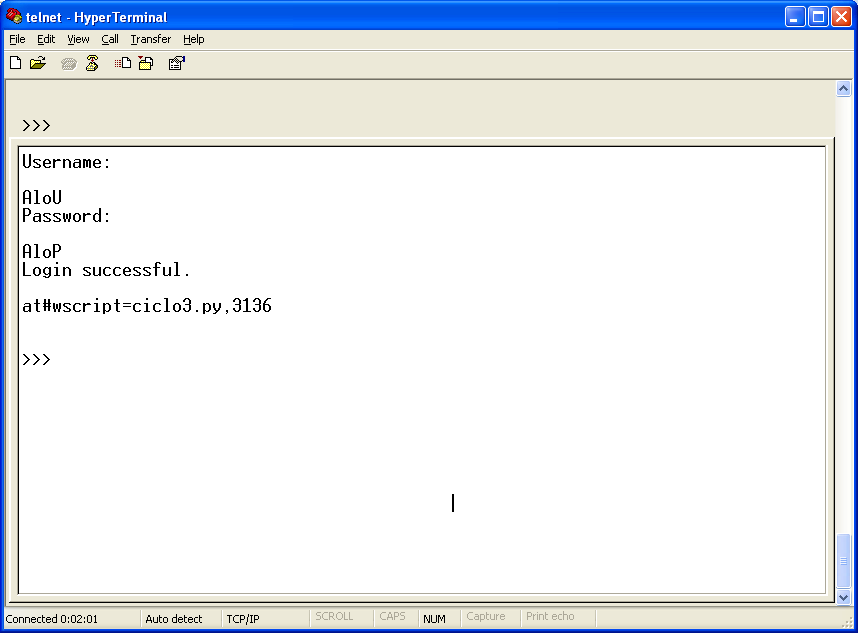
Running AT commands remotely Application Note
80000NT10029a Rev.4 – 2011-02-10
Reproduction forbidden without Telit Communications S.p.A. written authorization - All Rights Reserved
Page 36 of 37


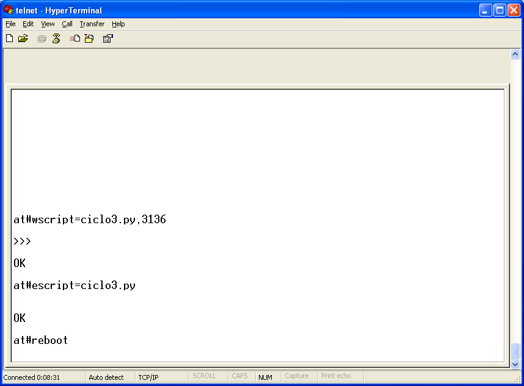
Running AT commands remotely Application Note
80000NT10029a Rev.4 – 2011-02-10
Reproduction forbidden without Telit Communications S.p.A. written authorization - All Rights Reserved
Page 37 of 37